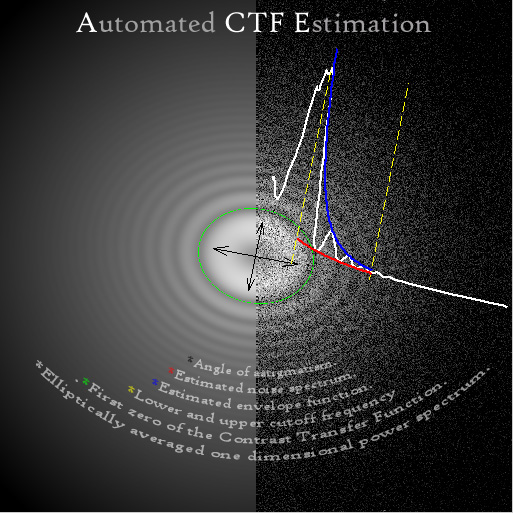

ACE: Automated CTF Estimation

About
ACE is a MATLAB
Toolbox for automatically
recovering the parameters of the contrast transfer function ( including
astigmatism ), the envelope function and the noise noise spectrum from
images of carbon or particles embedded in ice. It
requires the MATLAB image processing and optimization toolboxes.
The algorithm was
jointly developed by
Satya P. Mallick , David
Kriegman, Clint
Potter and Bridget
Carragher. The core code is written and maintained by Satya P. Mallick. The
code for integration with Leginon database is written by Denis Fellman.
For questions and comments, mail to spmallick@graphics.ucsd.edu.
License
This program is free software; you can redistribute it
and/or modify it
under the terms of the GNU General Public License
as published by the
Free Software Foundation; either version 2 of the License, or (at your
option) any later version. This program is
distributed in the hope that it will be useful, but WITHOUT ANY
WARRANTY; without even the implied warranty of MERCHANTABILITY or
FITNESS FOR A PARTICULAR PURPOSE. See the GNU General
Public License for more details. You should have received a copy of the
GNU General Public License along with this program; if not, write to
the Free SoftwarFoundation, Inc., 51 Franklin Street, Fifth Floor,
Boston, MA 02110-1301, USA.
Distribution
ACE is distributed as a tarball (ace_version.tgz )
which is
available in the following at the following locations
http://ami.scripps.edu/software/ace/
http://graphics.ucsd.edu/~spmallick/research/ace/
The later link contains all previous versions.
Installation
System Requirement: ACE
is tested on MATLAB 7.00 and 7.01. running on Linux. Although not tested extensively
for any other
*nix OS , Windows or MAC, it should work. A machine with 1GB RAM
is recommended for processing images
of size 4k x 4k .
Download the file ace_version.tgz from any of the above locations.
Unzip, untar the above file using
tar -zxvf ace_version.tgz
A directory called ace_cvs will be created.
Installation complete! You can choose to work in this directory or add
the directory to the matlab path using the matlab command addpath.
Getting Started
Non-Leginon Users :
A demo version is available for non-leginon
users.
- Estimation:To start
using
it start MATLAB and type "acedemo"at
the matlab command prompt. A Graphical User Interface (GUI) would
appear. The documentation
for acedemo can be accessed using the HELP button or by typing "doc
acedemo" at the command prompt. The same help is also available
at ACE
DEMO Documentation.
- Correction: After
estimating the parameters of the CTF using leginon_ace_gui, the
correction can be done by typing "acedemo_correct"; at the matlab
command prompt. The documentation for the GUI can be accessed using the
HELP button or by typing "doc acedemo_correct" at the command prompt
. The same help is also available at ACE DEMO CORRECT Documentation.
Leginon Users:
-
Estimation:
Start MATLAB and type "leginon_ace_gui" at the command
prompt. The documentation for the GUI can be accessed using the
HELP button or by typing "doc leginon_ace_gui" at the command prompt
. The same help is available at LEGINON ACE Documentation .
-
Correction:
After estimating the parameters of the CTF using
leginon_ace_gui, the correction can be done by typing
"leginon_ace_correct"; at the matlab command prompt. The documentation
for the GUI can be accessed using the HELP button or by typing "doc
leginon_ace_correct" at the command prompt . The same help is
also available at LEGIONON
ACE CORRECT Documentation.
This page can also be display by typing "doc ace" in
the matlab command prompt.
© 2004-2005 Satya P. Mallick